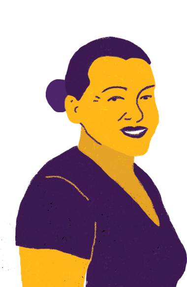
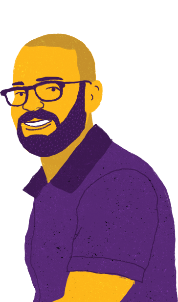
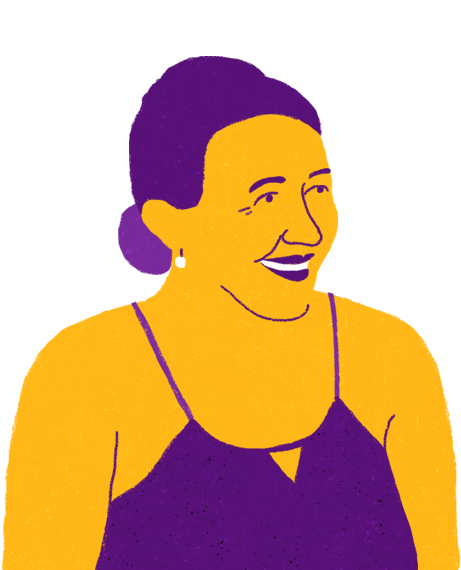
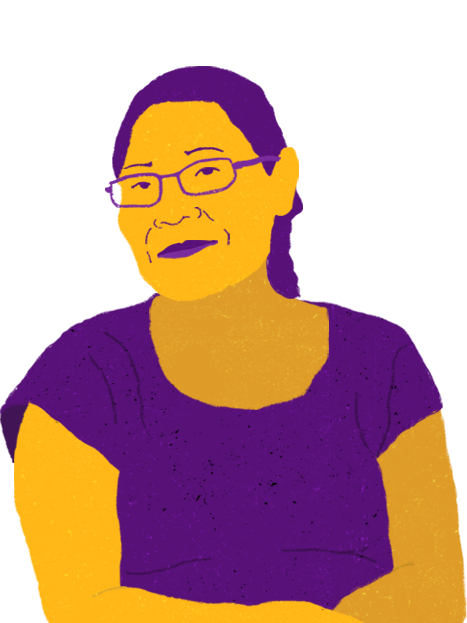

Ao longo dos 50 anos, a Diaconia transformou e segue transformando vidas. Cada uma
delas faz parte de nós.
Os retratos pendurados nessa parede trazem histórias singulares de mulheres, homens,
juventudes, famílias agricultoras e membros de ingrejas protagonistas dessa tranformação. Conheça alguns deles:

Antônia Damiana
Antônia Damiana:Em pleno semiárido do Alto Oeste Potiguar, Rio Grande do
Norte, Antônia Damiana produz banana, macaixeira, goiaba, capim-santo, agrião e muito mais. Tudo isso graças à
conquista da terra pela Reformar Agrária, a partir da luta das famílias que atualmente integram o Assentamento
1º de Maio, no município de Caraúbas. No quintal da agricultora tem minhocário, cisterna, biofiltro e
biodigestor, o que garantem, primeiramente, a segurança alimentar da família, e a geração de renda com a venda
dos produtos excedentes. Damiana também lidera o grupo de seis mulheres na horta comunitária. "O mais
importante que aprendi com a Diaconia foi ser independente", diz.
Projetos relacionados:
Mulheres organizadas coletivamente
Biogás
Alimento diversificado agroecológico
Acesso à água(água para beber)
Água para plantar e criar pequenos animais
Água - reaproveitamento e reuso
Caíque Rago
Caíque Rago:O jovem recifense Caíque Rago conheceu a Diaconia aos nove anos de
idade, no projeto Crescendo no Morro. Anos mais tarde, ele passou a participar do Centro de Comunicação e
Juventudo(CCJ), onde estudou designer gráfico, sua profissão atual. "Participei de muitas formaçõesm e, em
pouco tempo, me tornei educador do projeto. Foi um processo transformador. Hoje sou designer e amo o que faço",
conta.
Projetos relacionados:
Organização coletiva dos jovens
- Grupo de teatro
- Grupo de igrejas
- Articulação de jovens
- Estatuto da Juventude


Ivoneide Maria
Ivoneide Maria:Moradora do Sítio Retiro, em São José do Egito, Sertão do
Pajeú(PE), a agricultora Ivoneide Maria conheceu a Diaconia em 2002, por meio do irmão, que sempre foi
agricultor. Hoje, ela e sua família contam com cisterna, poços arterianos e amazonas, tanque de
reaproveitamente de água e biodigestor. As tecnologias de convivência com o Semiário são assenciais para
garantir uma produção de alimentos de qualidade como mel, ovos, mastruz, arruda, castanha de caju e hortaliças.
Esses são alguns dos produtos que geram segurança alimentar e renda semanal para a família.
Projetos relacionados:
Mulheres organizadas coletivamente
Desertificação
Aceso à água(água para beber)
Água para plantar e criar pequenos animais
Água - reaproveitamento e reuso
Alimento diversificado agroecológico
Joana D'arc
Joana D'arc:A assistente social Joana D'arc construiu uma história de superação
e luta como principal liderança da comunidade Margarida Alves, no bairro de Santa Filomena, em Fortaleza. Com o
suporte da Diaconia, ela ajudou a criar uma série de proketos dedicados a crianças e adolescentes. "Sempre me
considerei umamilitante desta causa da infância e da juventudo. É preciso investir nas pessoas, assim como a
Diaconia fez com a gente, fez comigo", destaca.
Projetos relacionados:
Mulheres organizadas coletivamente
Luta por direitos

Meio Ambiente e Clima
Soberania e Segurança Alimentar, Nutricional e Hídrica
Justiça de Gênero
Direitos das Juventudes
A sua contribuição fortalece nossos projetos e ajuda a transformar vidas.